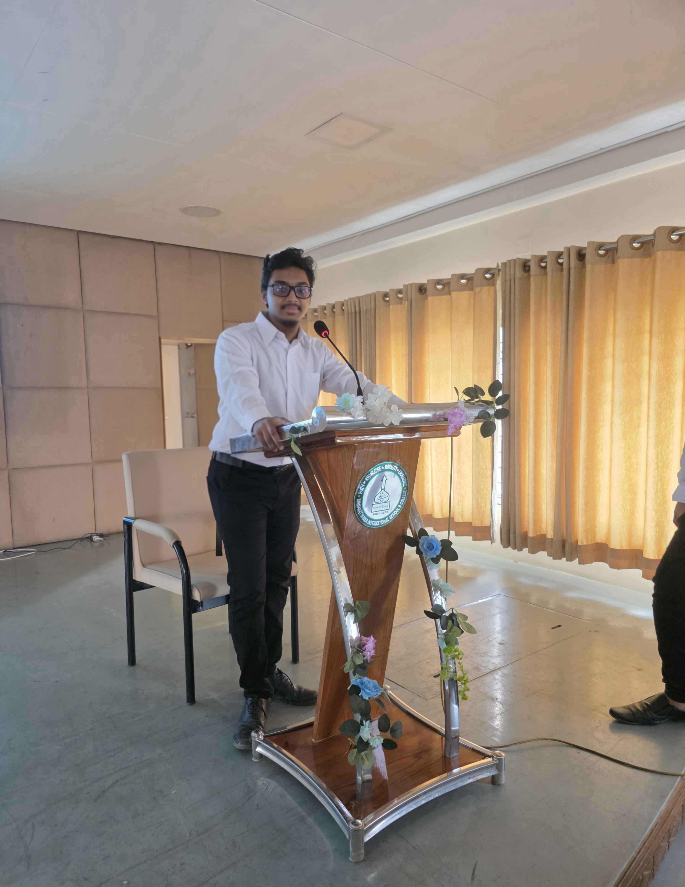

Currently — A Levels 2025/26
Studied under the British Council as a Cambridge International Education (CAIE) candidate.
Completed Cambridge O Levels (GCSE) with distinction across Physics, Chemistry, Biology,
Computer Science, and Additional Mathematics. Now pursuing A Levels with a laser focus
on breaking into the global AI and Cloud industry. Every line of code, every terminal
command, every late-night study session : all part of the plan.

Completed Cambridge GCSE under the British Council , scoring across Physics, Chemistry, Biology, Computer Science and Additional Mathematics. A foundation built for science, technology and beyond.

Proficient in Python programming, Linux command line operations, Additional Mathematics, and Cambridge Computer Science. Actively building projects and expanding knowledge in AI and cloud computing concepts.

Currently navigating A Level sciences under the Cambridge International curriculum. Balancing rigorous academic study with self-directed learning in Data Science, AI, and AWS Cloud infrastructure.

Aiming to study BSc Computer Science / Data Science / AI at a top international university after A Levels. Exploring opportunities in the UK, Canada, and beyond — with long-term goals at companies like Amazon AWS.

Using Linux as a daily driver — building real-world command line skills beyond the classroom. From file systems to bash scripting, every terminal session is a step closer to my cloud engineering mastery.

Represented my institution at academic and public events, developing communication and leadership skills alongside technical expertise. Building the full package — not just a coder, but a confident future professional.